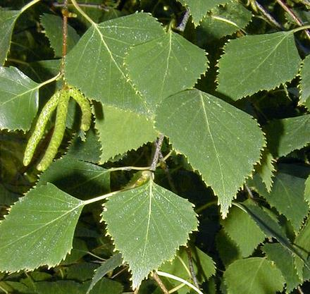
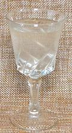
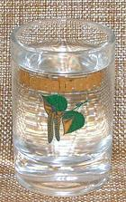
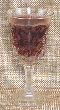
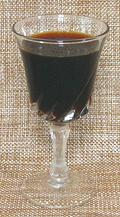
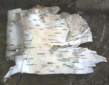
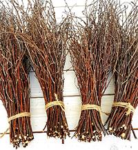

Birch

[genus Betula of Family Betulaceae: North America:
Betula lenta (Black Birch): Betula papyrifera (Paper Birch):
Betula neoalaskana (Alaska Birch): Betula fontinalis
(Red Birch) | Eurasia: Betula alba (White Birch):
Betula pendula (Silver Birch)]
These medium size trees are all cool weather Northern Hemisphere plants
that have been of great importance to humans about as long as there have
been humans in the cooler Northern Hemisphere. In cultivation, they can
survive as far south as Los Angeles, California.
The photo to the left is of B. pendula, showing leaves and
catkins. Note that the product from the Philippines called "Birch Flower"
is not actually birch, though it resembles birch catkins. It is from a
member of the Mulberry family,
Broussonetia luzonica.
Photo by A. Barra distributed under license
Creative Commons
Attribution-Share Alike 3.0 Unported.
More on Nut Trees.
Birch Sap

Birch Sap is tapped from the tree similarly to how Maple Sap is tapped,
but more delicately, because the tree is easily damaged. It is slightly
cloudy and slightly sweet. Fresh sap is extremely perishable and will
keep only a few days even refrigerated. Commercially, it is preserved
by some means: pasteurization, sugar (3 g per 100 ml), freezing, etc.
Pasteurization reduces the Vitamin C content, but other nutrients are
not affected. The sap is collected only in the early spring, for about
1 month before leaves sprout. Later it will be bitter.
Birch Syrup also has medicinal and cosmetic uses throughout its
range. It is a significant source of Vitamin C and B vitamins, as well
as minerals and antioxidants. The photo specimen, purchased from a large
multi-ethnic market in Los Angeles (Sunland), for 2019 US $2.29 per
liter. Natural Birch Sap, Sugar, Citric Acid, product of Ukraine. It
needs to be refrigerated after opening and consumed within 3 days.
Birch Vodka

The photo specimen, Nemiroff Birch Special Vodka, is a very good quality
vodka from Ukraine, lightly flavored with Birch Sap. Birch flavored vodka
is much favored in the region. It was purchased from a large multi-ethnic
market in Los Angeles (Glendale), but is widely available, as are other
Birch Vodkas from Ukraine, Russia, and other cold weather regions. There
was one from Alaska Distillery, made with Birch Syrup, giving it an amber
color, but that distillery has closed. It's successor, Alaskan Spirits
Distillery does not yet produce a Birch Vodka (2018).
Birch Beer

This is made mainly in the Northeast United States, and in
Newfoundland, Canada. It is normally a non alcoholic. carbonated "soft
drink", but alcoholic versions can be made. A center of production in
the US is by the Pennsylvania Dutch. It may be flavored with extracts
of Birch Bark or the flavors may be from distilling Birch Sap to get
Birch Oil, and it may be made with various degrees of "authenticity".
It has also been produced by directly fermenting a mix of Birch Sap,
Sugar and yeast - which will produce a mildly alcoholic beverage.
Birch Syrup

This is a very expensive syrup. It takes 100 to 150 liters of birch
sap to make 1 liter of syrup - about twice as much as for maple syrup.
Alaska Birch takes the most (130 to 150 liters) because its sap is
thinner than the others. Birch Syrup is often made using reverse osmosis
and evaporators to remove water rather than boiling it down like maple
syrup, as it burns much more easily than maple sap. It is a fairly light
syrup, with a taste described as "more minerally" than Maple Syrup.
Major production regions are Russia, Canada, Alaska, Belerus, Ukraine
and Scandinavia. The photo specimen was made in Vermont, U.S. and
purchased for 2019 US $27.81 for 8 ounces (236 ml) with free shipping.
Birch Bark

Birch Bark has been used directly for food only during times of famine,
when it has been ground to make "Birch Bread". It is also used to
extract flavors, especially a wintergreen flavor, and others used to
flavor beverages. It has also had many other uses, such as canoes in
North America and the traditional shoes in Finland, and writing surfaces
in ancient times. It has also been used as roofing shingles, where it
is very resistant to decay.
Photo by User:PBASH607 distributed under license
Creative Commons
Attribution-Share Alike 3.0 Unported.
Birch Twigs

In Finland, bundles of birch twigs are used in the sauna for self
flagilation. Those in the photo were for sale as decorative accents,
but I'm sure they would serve.
Photo borrowed from EcoWoodDecore under fair use doctrine -
product available on amazon.com.
ok_birchz 190711 - www.clovegarden.com
©Andrew Grygus - agryg@clovegarden.com - Photos on this
page not otherwise credited are © cg1 -
Linking to and non-commercial use of this page permitted